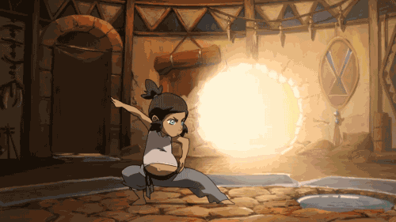
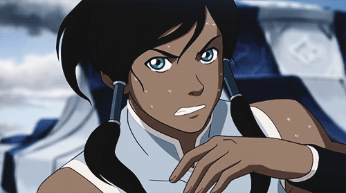

About Korra
Korra is the avatar succeeding Aang. She is a strong-willed, at times hot headed, powerful bender and leader.
Team Avatar
Korra cannot save the world alone! She has an awesome group of friends who help her along the way. Click on the links below to read more about them.
Korra's Abilities
Her Bending Ability:
On top of being the avatar, Korra is a bending prodigy. She could already bend water, earth, and fire as a child.

Avatar State:
Korra, like the avatar's before her, has the ability to connect with her past lives, spiritually and through battle.
Brute strength and fighting ability:
Korra is a natural fighter. She has used her skills to be a successful pro bender.
